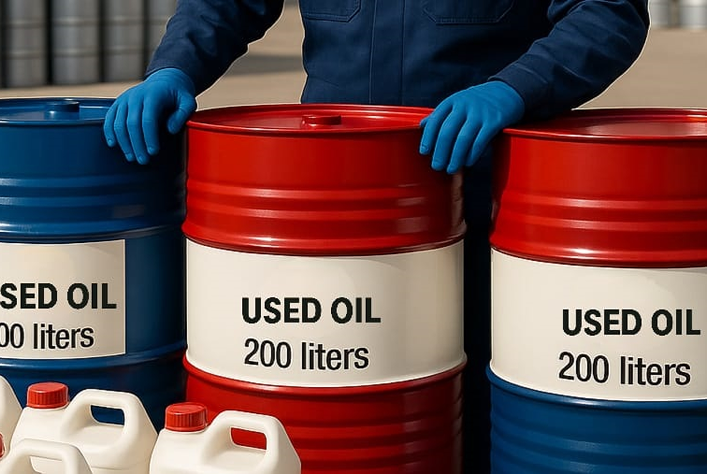

Used Oil Disposal Services in Tamil Nadu
Safe, compliant disposal and certified management for drained engine lubricants, gear oils, and degraded industrial machinery fluids adhering to TNPCB environmental mandates.

What is Used Oil Disposal?
Used oil disposal refers to the compliant collection, handling, and certified end-of-life processing of drained petroleum or synthetic oils that have fulfilled their operational service cycle in engines, gearboxes, and machinery.
Because used motor and lubricating oils accumulate carbon deposits, heavy metals (lead, cadmium), and combustion acids during equipment operation, they are classified as hazardous waste under Schedule I, Category 5.1 of India's Hazardous Waste Management Rules. Green Way Industries provides licensed pickup and authorized downstream processing, issuing legal Form-10 manifests that protect fleet owners, workshops, and plant managers from regulatory penalties.
Why Safe Used Oil Disposal Matters for Workshops & Plants
Drained engine and lube oils cannot be poured into open drains, burned in uncontrolled heaters, or sold to informal scrap collectors without violating Indian environmental statutes.
Prevent Heavy Legal Penalties
Unregistered transfer of used motor oil violates Hazardous Waste Rules 2016. Handing oil to our authorized facility protects your business from notices and fines.
Mitigate On-Site Fire Risks
Accumulating drums of degraded lubricants in workshops poses acute combustible hazards. Planned disposal clears barrels promptly.
Statutory Form-10 Records
Every barrel collected is accompanied by a signed Form-10 hazardous waste manifest, providing verifiable audit trails for pollution inspectors.
Our Used Oil Disposal Process
We streamline used oil handover into a structured 5-step process designed for fast turnaround and absolute documentation integrity.

Volume & Grade Verification
Tell us your accumulated volume (number of barrels or bulk sump quantity) and source (engine maintenance, fleet drains, or machinery lube).
Dedicated Collection Scheduling
Our dispatch team assigns an authorized carrier vehicle or vacuum tanker equipped for clean, drip-free extraction.
Containment & Safe Pumping
Trained handlers safely evacuate barrels or tanks, utilizing spill trays and certified transfer fittings.
Authorized Facility Treatment
Used oil is transported directly to our SIDCO Tindivanam plant for licensed processing, dewatering, and authorized recovery/treatment.
Manifest & Compliance Sign-off
We issue countersigned Form-10 manifests confirming legal custody transfer to maintain in your environmental register.
Used Oil Types We Accept
We manage all varieties of drained and degraded industrial and automotive lubricants:
- Used motor and diesel engine crankcase oils
- Drained automotive transmission fluids and gear oils
- Industrial gearbox, circulating, and bearing lubricants
- Degraded compressor oils and refrigeration lubricants
- Non-chlorinated machine sump lubricants and drain residues
Who We Provide Disposal For
Serving automotive networks and industrial facilities across Tamil Nadu:
- Automotive authorized service centers and independent multi-brand garages
- Commercial fleet operators, logistics companies, and bus transport depots
- Heavy industrial manufacturing factories and assembly facilities
- Earthmoving machinery yards and infrastructure construction sites
- Genset maintenance contractors and industrial utility yards
Our Infrastructure & Logistics Capabilities


Used Oil Disposal Across Tamil Nadu
Green Way Industries provides responsive used oil disposal coverage tailored to the active logistics and industrial belts of Tamil Nadu.
With operational coordination from our Chennai office in Ashok Nagar and licensed recycling and disposal infrastructure in SIDCO Industrial Estate, Tindivanam/Villupuram, our fleet services Chennai, Kanchipuram, Chengalpattu, Sriperumbudur, Oragadam, Ambattur, Ranipet, Tiruvallur, Vellore, Salem, and Coimbatore.
We work with commercial workshops and plant EHS managers to establish dependable pickup cadences that keep client facilities completely compliant.
Dispose of Used Oil Safely
Contact our compliance desk today to schedule your used oil collection and receive certified disposal documentation.
Chennai Office: Ashok Nagar, Chennai
Plant Location: SIDCO Industrial Estate, Tindivanam
Phone: +91 93600 36055
Email: admin@usedoil.in
Why Partner with Green Way Industries?
Pollution Board Authorized
Operating under valid authorizations ensuring your waste is handled strictly within state legal bounds.
Guaranteed Form-10
Full statutory manifest documentation provided at the time of loading to ensure complete audit compliance.
Prompt Pickup Runs
Reliable logistics preventing dangerous on-site barrel backlog in workshops and plant storage yards.
Traceable Stewardship
Complete traceability from site extraction to processing facility without unauthorized third-party leakage.
Used Oil Disposal FAQs
Yes. Under the Hazardous and Other Wastes Management Rules (Schedule I, Category 5.1), used motor and lubricating oils are regulated hazardous wastes that must be transferred exclusively to authorized recyclers.
No. Handing used oil to unregistered buyers is illegal in India, risking heavy pollution fines and cancellation of workshop municipal trade licenses.
We provide the statutory Form-10 Hazardous Waste Manifest, which documents the exact quantity transferred, the vehicle registration number, and the authorized receiving facility.
Generally, compatible petroleum lubricating oils (engine oil, gear oil) can be co-stored for disposal. However, do not contaminate used oil with solvents, petrol, battery acid, or coolants.
Store barrels upright with bungs tightly sealed in a covered, bunded area to shield them from rain and prevent accidental ground seepage.
Yes. We service commercial automobile service centers and workshops with multi-barrel pickups across our regular collection routes.
Safely Dispose of Your Accumulated Used Lubricants
Connect with our team to arrange compliant used oil collection and secure statutory Form-10 manifests for your facility.
Schedule Used Oil Disposal Call Compliance Coordinator